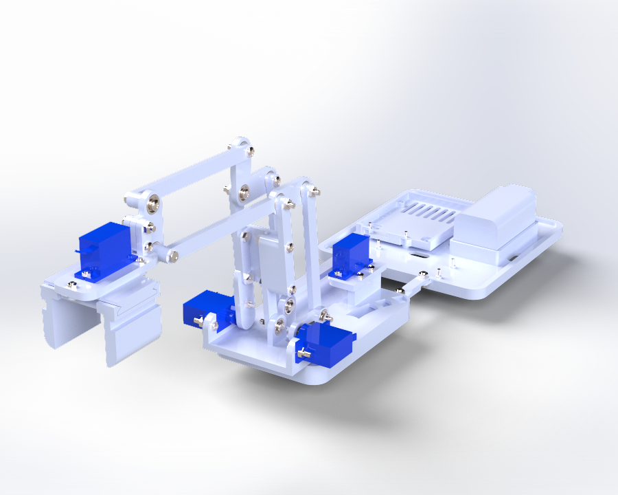

3-DOF Robotic Arm

Design, manufacture, and program a 3-DOF robotic arm with the following objectives:
- Move its end effector in straight lines along x, y, and z axes
- Be easily controllable
- Grip and move objects within its workspace
- Maintain end effector parallelism with the ground
How
Designed the robot and the base for electronics using SolidWorks and 3D printing with tight tolerances. Employed servo motors and a driver for motion, powered by a 6V battery. Used an Arduino board, inverse kinematics, C++ scripts, and a Python GUI for control. Ensured parallelism of the end effector with four-bar linkages.
Why
Chose SolidWorks for its industry-standard use and versatility. Selected 3D printing for rapid prototyping. Used servo motors for straightforward position control and an Arduino for its extensive documentation. Employed a Python GUI for modularity and integrated four-bar linkages for their effectiveness in maintaining parallelism.
Results
Achieved smooth linear movements to any point within the workspace, with reliable gripping and consistent performance. The four-bar linkages successfully maintained parallelism, facilitating efficient object manipulation.